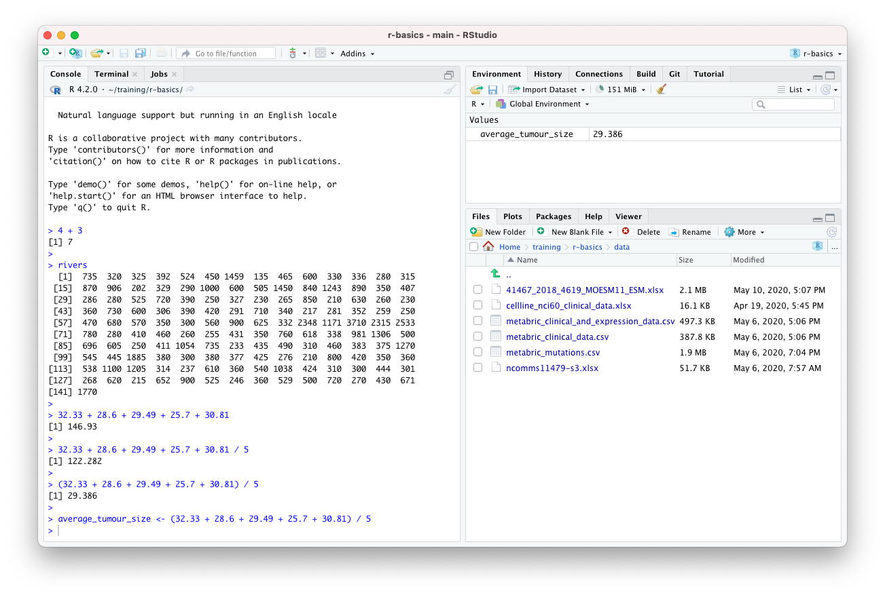
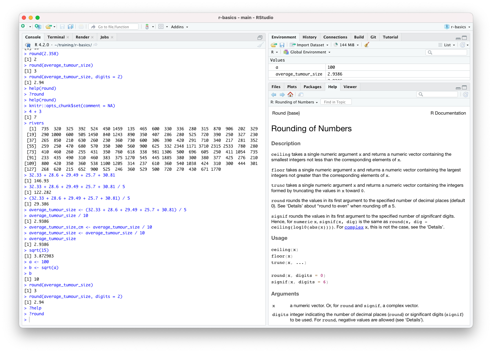
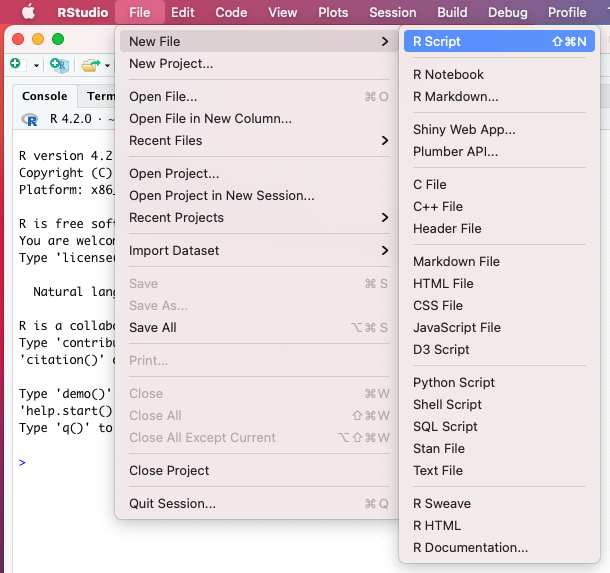
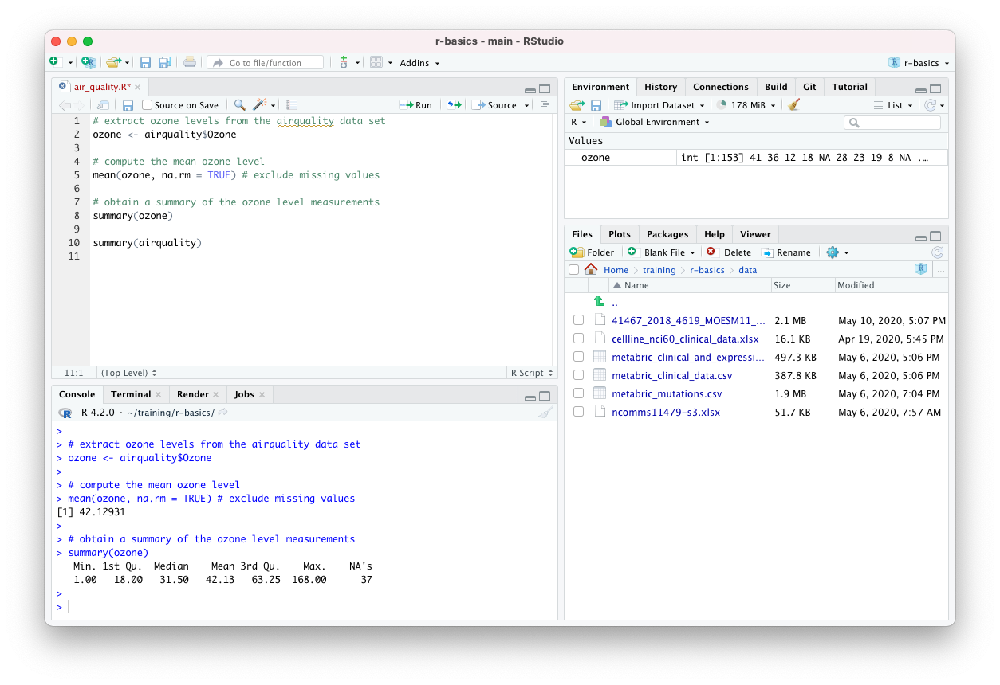
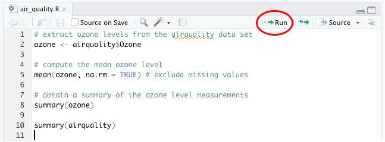

Introduction to R
Objectives
- Get acquainted with the R command prompt
- Create named objects and assign values to them
- Create and work with vectors containing series of values
- Call functions and use arguments to change their default options
- Look at how R handles missing values
- Write R code in a script
Using R as a calculator
Open RStudio and type the following at the command prompt,
> (in the console tab pane), to add two
numbers together.
4 + 3[1] 7Clearly the answer is 7 but what’s the [1] that you see
printed before it?
Sometimes operations will return more than one value and these may get written across several lines. Here’s an example using one of the built-in datasets that contains the lengths of the major North American rivers.
rivers [1] 735 320 325 392 524 450 1459 135 465 600 330 336 280 315 870
[16] 906 202 329 290 1000 600 505 1450 840 1243 890 350 407 286 280
[31] 525 720 390 250 327 230 265 850 210 630 260 230 360 730 600
[46] 306 390 420 291 710 340 217 281 352 259 250 470 680 570 350
[61] 300 560 900 625 332 2348 1171 3710 2315 2533 780 280 410 460 260
[76] 255 431 350 760 618 338 981 1306 500 696 605 250 411 1054 735
[91] 233 435 490 310 460 383 375 1270 545 445 1885 380 300 380 377
[106] 425 276 210 800 420 350 360 538 1100 1205 314 237 610 360 540
[121] 1038 424 310 300 444 301 268 620 215 652 900 525 246 360 529
[136] 500 720 270 430 671 1770The numbers in brackets are indexes for the first element printed on
each line, so the first line will always begin with [1] as
that line starts with the first element. If a subsequent line starts
with [11], for example, then the first element printed on
that line is the eleventh element within the list.
Exercise
Try doing some subtractions, multiplications and divisions at the R command prompt.
The operator for multiplication is
*and for division it is/.
Let’s add several numbers together.
32.33 + 28.6 + 29.49 + 25.7 + 30.81[1] 146.93And we’ll divide by 5 to get the mean value.
32.33 + 28.6 + 29.49 + 25.7 + 30.81 / 5[1] 122.282That doesn’t look right. Can you see how R has interpreted this?
The last of our values, 30.81, was divided by 5 before adding the result to the other values. This is because multiplication and division operations take precedence over addition and subtraction and so they are calculated first.
We can use parentheses to ensure that our values are added together before dividing by the number of values.
(32.33 + 28.6 + 29.49 + 25.7 + 30.81) / 5[1] 29.386Creating objects in R
If we want to use our average value, perhaps in another calculation,
we need some way of storing it for use later. We need to assign the
value to an object and we can do this with the assignment
operator, <-.
average_tumour_size <- (32.33 + 28.6 + 29.49 + 25.7 + 30.81) / 5It is also possible to use = for assignment and if
you’re familiar with other programming languages this will feel more
natural. <- is preferred though and there are some
situations where using = may have unforeseen
consequences.
Our new object is listed in the Environment tab in the top right panel in RStudio.
 Objects are commonly referred to as variables, a term commonly used in other programming languages.
We can now use our object in further calculations. For example, if our tumour sizes were measured in millimetres and we wanted to convert the average value to centimetres, we could do the following:
average_tumour_size / 10[1] 2.9386We could assign the converted value to another object,
average_tumour_size_cm <- average_tumour_size / 10or overwrite the existing one.
average_tumour_size <- average_tumour_size / 10To check a value of our object, we can get R to print it out in the console by typing its name.
average_tumour_size[1] 2.9386Vectors and data types
A vector is an ordered series of values and is the simplest
data structure in R. The rivers data set is an example of a
vector.
We can create a vector of our tumour sizes using the c()
function.
tumour_sizes <- c(32.33, 28.6, 29.49, 25.7, 30.81)
tumour_sizes[1] 32.33 28.60 29.49 25.70 30.81We’ll introduce functions in the next section but for now we note
that c stands for ‘combine’ and the c()
function combines the values it is given within the parentheses into a
vector.
Most operations in R are ‘vectorized’, i.e. they can work on vectors. For example we can convert our tumour sizes to centimetres in a single operation.
tumour_sizes_cm <- tumour_sizes / 10
tumour_sizes_cm[1] 3.233 2.860 2.949 2.570 3.081Vectors contain values that are all of the same type. So far, we’ve only been using numeric values but there are some other atomic data types including Boolean (logical) and character values.
Character values are strings of characters enclosed in quotation marks.
drug <- "Tamoxifen"drugs <- c("Tamoxifen", "Fulvestrant", "Olaparib", "Paclitaxel")Logical values can be either TRUE or
FALSE.
positive_outcomes <- c(TRUE, FALSE, FALSE, TRUE, TRUE)Logical values are produced when using logical operators, e.g. the
greater than operator >.
average_tumour_size_cm > 3[1] FALSEWe can also do this on vectors to produce logical vectors, something we’ll come back to shortly.
tumours_larger_than_30mm <- tumour_sizes > 30
tumours_larger_than_30mm[1] TRUE FALSE FALSE FALSE TRUEExercise
Try creating a vector that contains values with different types (numeric, logical, character)
Try different combinations of types and see what happens, for example
c(FALSE, 2.5)
c(FALSE, 2.5, "hello")
Functions
R contains a large set of functions that do many useful operations.
Let’s have a look at a simple example, the log2() function
that calculates the base 2 logarithm of a number.
log2(4)[1] 2A function usually takes one or more inputs known as arguments. Functions often, but not always, return a value, which in turn can be assigned to an object.
a <- 10.25
b <- log2(a)
b[1] 3.357552The log2() function only takes a single argument. Let’s
try a function that can take multiple arguments:
round()
round(average_tumour_size)[1] 3By default the round() function rounds to the nearest
whole number. We can specify the number of digits to round to using the
additional digits argument.
round(average_tumour_size, digits = 2)[1] 2.94Information about a function can be found on its help page by typing
?round or help(round) at the command
prompt.
?roundThe ‘Help’ tab should be visible in the lower right panel in RStudio.

The Usage section shows that the default value for the
digits argument is 0 and that digits refers to
the number of decimal places. The help page also gives information for
some related functions, signif(), ceiling(),
etc.
So if we don’t specify the value for digits, it will round to 0 digits (decimal places), i.e. to the nearest whole number.
If we provide the arguments in the exact same order as they are defined we don’t have to name them.
round(average_tumour_size, 2)[1] 2.94It’s good practice to put the non-optional arguments, like the number we’re rounding in this case, first in the function call, in the order they’re expected (in which case you don’t need to name them), and then use names for all the optional arguments you’re specifying. It will make it much easier for someone reading your code and is less error-prone, particularly when using functions with many arguments.
Many functions take vector arguments. Some are vectorized and carry out the same operation on all the elements of the vector, e.g.
log10(tumour_sizes)[1] 1.509606 1.456366 1.469675 1.409933 1.488692Others compute a summary value from the given vector. For example, we
can pass our vector of tumour sizes to the mean() function
to compute the average value we calculated earlier.
average_tumour_size <- mean(tumour_sizes)
average_tumour_size[1] 29.386Exercise
Try computing some other summary statistics on the vector of tumour sizes using the functions,
sd(),var(),median(),IQR(),min()andmax().Look up the Help page for these functions. Try running some of the example code snippets given in the Examples section in the help page.
We can nest function calls, one within another,
average_tumour_size <- round(mean(tumour_sizes), digits = 1)
average_tumour_size[1] 29.4but this can make for code that is difficult to read. Usually it is better to keep things simple even if you end up with code that is more verbose.
average_tumour_size <- mean(tumour_sizes)
average_tumour_size <- round(average_tumour_size, digits = 1)
average_tumour_size[1] 29.4Extracting subsets from vectors
One of the operations we do frequently is to select subsets of our data that are of particular interest.
To select one or more values from a vector we need to provide the index or indices within square brackets.
tumour_sizes[3][1] 29.49tumour_sizes[c(1, 4, 5)][1] 32.33 25.70 30.81It is also quite common to extract a range of values using the
: operator. The : operator creates a sequence
of integer numbers.
2:4[1] 2 3 4tumour_sizes[2:4][1] 28.60 29.49 25.70Conditional subsetting
Another way of subsetting a vector is to use a logical vector.
selected <- c(TRUE, FALSE, FALSE, TRUE, TRUE)
tumour_sizes[selected][1] 32.33 25.70 30.81You may be thinking that this seems very abstract and questioning why it would ever be useful. But actually, it is probably the most commonly used way of selecting values of interest from a vector.
Recall how we used the > operator to create a logical
vector corresponding to those tumours with a size greater than 30mm. We
can use that to extract the sizes of those tumours.
tumours_larger_than_30mm <- tumour_sizes > 30
tumour_sizes[tumours_larger_than_30mm][1] 32.33 30.81In practice, we wouldn’t really create a variable containing our logical vector signifying which values are of interest. Instead we’d do this in a single step.
tumour_sizes[tumour_sizes > 30][1] 32.33 30.81Other logical operators include == (equal to),
!= (not equal to), < (less than),
<= (less than or equal to) and >=
(greater than or equal to).
We can combine logical operations using & and
| operators which are the R versions of the AND and OR
operations in Boolean algebra but which are applied to vectors.
For example, we could obtain the sizes of tumours that are between 27.5mm and 30mm.
tumours_of_interest <- tumour_sizes >= 27.5 & tumour_sizes <= 30
tumour_sizes[tumours_of_interest][1] 28.60 29.49Or in a single command:
tumour_sizes[tumour_sizes >= 27.5 & tumour_sizes <= 30][1] 28.60 29.49Modifying vectors
We can add new values to a vector using the c()
function.
tumour_sizes <- c(tumour_sizes, 31.92, 24.11)
tumour_sizes[1] 32.33 28.60 29.49 25.70 30.81 31.92 24.11We can also combine two or more vectors in the same way.
more_tumour_sizes <- c(26.34, 29.93)
tumour_sizes <- c(tumour_sizes, more_tumour_sizes)
tumour_sizes[1] 32.33 28.60 29.49 25.70 30.81 31.92 24.11 26.34 29.93One of more values in a vector can be changed using the same subsetting operations we used before but this time assigning new values to the subset.
tumour_sizes[3] <- 33.67
tumour_sizes[1] 32.33 28.60 33.67 25.70 30.81 31.92 24.11 26.34 29.93tumour_sizes[c(2, 6, 7)] <- c(29.58, 25.55, 34.51)tumour_sizes[4:6] <- c(31.83, 25.99, 27.24)Missing values
Missing values are quite common in scientific data and R has a way of
handling these using the special value, NA, which stands
for ‘not available’.
The airquality example data set that comes with R
contains missing values. This data set is a table of daily air quality
measurements taken in New York and includes observations of ozone
levels, wind speed and temperature. We’ll extract the ozone measurements
from the table (Ozone column) as a vector.
ozone <- airquality$Ozone
ozone [1] 41 36 12 18 NA 28 23 19 8 NA 7 16 11 14 18 14 34 6
[19] 30 11 1 11 4 32 NA NA NA 23 45 115 37 NA NA NA NA NA
[37] NA 29 NA 71 39 NA NA 23 NA NA 21 37 20 12 13 NA NA NA
[55] NA NA NA NA NA NA NA 135 49 32 NA 64 40 77 97 97 85 NA
[73] 10 27 NA 7 48 35 61 79 63 16 NA NA 80 108 20 52 82 50
[91] 64 59 39 9 16 78 35 66 122 89 110 NA NA 44 28 65 NA 22
[109] 59 23 31 44 21 9 NA 45 168 73 NA 76 118 84 85 96 78 73
[127] 91 47 32 20 23 21 24 44 21 28 9 13 46 18 13 24 16 13
[145] 23 36 7 14 30 NA 14 18 20We’ll be looking at tabular data in the next part of the course so
don’t worry about the $ operator we used here for now.
Most functions will return NA if the data they work on
contain missing values.
mean(ozone)[1] NAThe mean() function, and many like it, takes the view
that it cannot compute the mean for a set of values where some are
unknown. This is quite annoying but these functions usually have an
argument named na.rm that can be set to TRUE
to remove the NA values before doing the calculation.
mean(ozone, na.rm = TRUE)[1] 42.12931The very useful summary() function
One very useful function is summary(). As the name
suggests this produces a summary of the values it is given. It is really
flexible and can take vectors of different types, tables and other data
structures.
summary(ozone) Min. 1st Qu. Median Mean 3rd Qu. Max. NA's
1.00 18.00 31.50 42.13 63.25 168.00 37 summary(tumours_larger_than_30mm) Mode FALSE TRUE
logical 3 2 summary(airquality) Ozone Solar.R Wind Temp
Min. : 1.00 Min. : 7.0 Min. : 1.700 Min. :56.00
1st Qu.: 18.00 1st Qu.:115.8 1st Qu.: 7.400 1st Qu.:72.00
Median : 31.50 Median :205.0 Median : 9.700 Median :79.00
Mean : 42.13 Mean :185.9 Mean : 9.958 Mean :77.88
3rd Qu.: 63.25 3rd Qu.:258.8 3rd Qu.:11.500 3rd Qu.:85.00
Max. :168.00 Max. :334.0 Max. :20.700 Max. :97.00
NA's :37 NA's :7
Month Day
Min. :5.000 Min. : 1.0
1st Qu.:6.000 1st Qu.: 8.0
Median :7.000 Median :16.0
Mean :6.993 Mean :15.8
3rd Qu.:8.000 3rd Qu.:23.0
Max. :9.000 Max. :31.0
Scripting in R
Up to now, we were mostly typing code in the Console pane at the
> prompt. This is a very interactive
way of working with R but it is also important to be able to record the
commands you’ve typed for when you come back to your analysis later.
Instead we can create a script file containing our R commands; this is the way most R coding is done.
From the RStudio ‘File’ menu, select ‘New File’ and then ‘R Script’.

You should now have a new file in its own tab, named ‘Untitled1’, at the top of the left-hand side of RStudio. The console window no longer occupies the whole of the left-hand side.
We can type code into this file just as we have done at the command prompt in the Console tab pane. Save changes you make using the ‘Save’ option from the ‘File’ menu. There is also a button or you can use a keyboard shortcut. On a Mac this is cmd + S (press the cmd key first and, while keeping this depressed, click the S key); on Windows it is Ctrl + S. RStudio will open a dialog box for you to enter the file name and loation the first time you try to save a new file. It is a good idea to regularly save changes to your script.

Running scripts
Having typed an R command and hit the return key you’ll notice that the command isn’t actually run like it was in the console window. That’s because you’re writing your R code in an editor. To run a single line of code within your script you can press the ‘Run’ button at the top of the script.

This will run the line of code on which the cursor is flashing or the next line of code if the cursor is on a blank or empty line.
The keyboard shortcut is more convenient in practice as you won’t have to stop typing at the keyboard to use your mouse. This is cmd + return on a Mac and Ctrl + enter on Windows.
Running a line in your script will automatically move the cursor onto the next command which can be very convenient as you’ll be able to run successive commands just by repeatedly clicking ‘Run’ or using the keyboard shortcut.
You can also run the entire script by clicking on the ‘Source’ button, a little to the right of the ‘Run’ button. More useful though is to run ‘Source with Echo’ from the Source drop-down menu as this will also display your commands and the outputs from these in the Console window.
Adding comments to your code
Anything that follows a # character within a line of
code is ignored by R. This is useful as it allows you to add comments
and explanations to your code.
# extract tumour sizes that are greater than 30mm
large_tumour_sizes <- tumour_sizes[tumour_sizes > 30]Comments usually appear at the beginning of lines but can appear at the end of an R statement.
days <- c(1, 2, 4, 6, 8, 12, 16) # didn't manage to get a measurement on day 10It is also quite common when looking at R code to see lines of code commented out, usually replaced by another line that does something similar or makes a small change.
# random_numbers <- rnorm(100, mean = 0, sd = 1)
random_numbers <- rnorm(100, mean = 0, sd = 0.5)